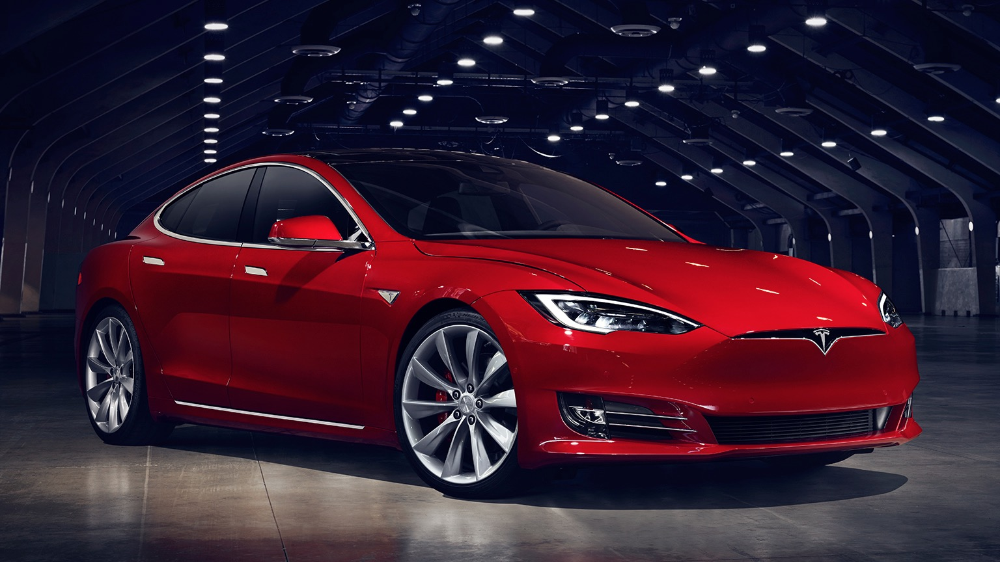
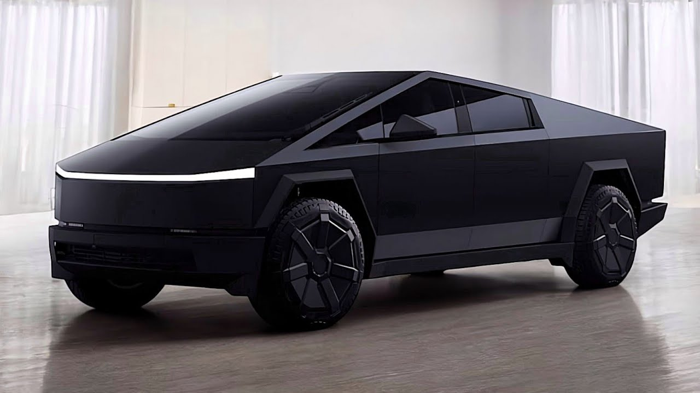

აქ გაეცნობით ტესლას მოდელებს

Tesla Model S არის სრულად ელექტრო სედანი, რომელიც გამოირჩევა სისწრაფითა და თანამედროვე ტექნოლოგიებით

Tesla Cybertruck არის აკუმულატორზე მომუშავე, სრული ზომის პიკაპი, რომელსაც Tesla, Inc. 2023 წლიდან აწარმოებს.